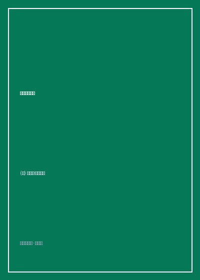

《时间足够你爱》

总体观点
《时间足够你爱》打破了传统硬科幻对冷酷机械与太空战争的迷恋，将目光投向了'时间'与'爱'的本体论思考。永生若没有真挚的爱与好奇心支撑，不过是无边无际的痛苦牢狱与漫长窒息。
海因莱因借最年长人类拉撒路·朗的口吻，发表了震聋发聩的人类生存哲学：自由至上、对权威的天然戒备、对家庭多元形态的包容，以及对肉身劳作与开荒勇气的崇高礼赞。
穿越两千年漫长星际纪元，拉撒路最终选择时空穿越回到第一次世界大战前夕平凡的童年故乡，证明了人世间最崇高的救赎不是征服星辰大海，而是重回所爱之人身旁的温暖相拥。
核心观点
-
1. 永生的真正敌人是厌倦：爱是拯救灵魂的唯一解药
当一个人活过了两千年、看尽了所有帝国的兴衰与技术奇观时，活下去的唯一动力不再是生存本能，而是为了所爱之人继续呼吸。
两千岁高龄的拉撒路躺在病床上准备绝食安乐死，后辈族人以'请再给我们讲讲当年的故事'为由重新唤醒其生命火种。 -
2. 拉撒路·朗的处世箴言：个人主义与自由常识的璀璨结晶
书中穿插的数十条拉撒路笔记本格言，涵盖政治、战争、爱情与育儿，言辞辛辣刻薄却句句直击人性要害。
'一个人应当能够换尿布、策划入侵、宰猪、开船、设计建筑物、写十四行诗、平账、砌墙、接骨、安慰临终者...专业化是昆虫干的事。' -
3. 蛮荒星球上的拓荒文明：动手劳动赋予生命坚实重量
高度自动化带来的安逸往往会使人类种族退化，唯有在未开垦的荒芜星球上亲手伐木、盖房、驯服野兽，生命才能迸发生机。
拉撒路隐姓埋名在遥远边境星球担任拓荒木匠，与勤劳的妻子共同建立农庄，体验汗水滴在泥土里的纯粹幸福。 -
4. 打破传统道德规训：以深层自愿契约重构亲密关系
海因莱因前卫探讨了血缘、婚姻与物种界限的消解，认为只要建立在完全自愿、真诚互助的基础之上，爱可以超越一切世俗禁忌。
拉撒路收养并深爱由自己基因培育而成的双胞胎克隆姐妹，展现超越传统父权与生理限制的新型情感共鸣。 -
5. 向过去回溯寻找母体：在最初的原点完成灵魂闭环
走遍全宇宙的探险家最终渴望的是母亲温柔的臂弯，利用时空机器重返1916年堪萨斯农庄，在历史必然性中完成对亲情的庄严告别。
拉撒路化名青年士兵重逢年轻时的生母莫琳，并在前线战场用肉身替战友挡下弹片，在濒死中获得灵魂的大圆满。
全书结构
-
第一卷 活得太久的困倦：长生者的安乐死危机与记忆重启
叙述拉撒路·朗在活过两千岁后对漫长生命感到极度厌倦，族长议会用唤醒记忆与答应带他体验全新冒险劝其重燃生机。
躺在最尖端医疗舱中的老人拒绝延寿针剂，面对族长说出'我已经活够了，给我想一个不死的理由'的震撼开篇。 -
第二卷 星际垦荒录：木星卫星与蛮荒星球上的拓荒岁月
拉撒路讲述自己数百年间带领长生家族逃离地球偏见、在遥远星系开疆拓土建立全新文明的壮阔纪实。
拓荒飞船在未知重力星球坠毁，拉撒路带领幸存者用原始手斧劈开热带雨林，建立自给自足独立公社的英雄岁月。 -
第三卷 拉撒路·朗的格言笔记：关于人性、政治与婚姻的冷峻箴言
全书著名的思想插页，系统呈现海因莱因借拉撒路日记阐发的自由意志主义、反官僚主义与两性智慧语录。
收录'绝不要对一头猪唱歌，这既浪费你的时间，也惹猪讨厌'等广为流传的经典智慧断片。 -
第四卷 爱的多元光谱：超越血缘与物种的深层情感羁绊
探讨在人工智能、克隆技术与寿命极度延长的时代，爱如何打破身体外壳，在不同智慧生命之间流淌滋长。
智能飞船主机密涅瓦通过具身化克隆体获得人类心智，在与拉撒路的相处中体会到流泪与心跳的动人觉醒。 -
第五卷 逆流时间河：重返1916年堪萨斯故乡与母亲的相遇
拉撒路启动时空穿梭装置，回到第一次世界大战爆发前夕的美国中西部，以成年人视角重新拥抱年轻的父母。
走在百年前阳光灿烂的泥土马路上，闻着久违的马车与青草芬芳，老人蹲下身摸抚门前那条童年忠犬的温热皮毛。 -
尾声：只要爱还在，时间就永远足够
经历时空风暴劫后余生的拉撒路在家族新一代的簇拥中醒来，放下寻死的执念，微笑着迈向未来的无穷岁月。
拉撒路拉起爱人的手走向崭新的星际移民飞船，轻声感叹'只要有你们在身边，两千年也不过是一场美丽的序曲'。